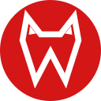

WolfWeb isn't your default browser. Make it the one links open in?

WolfWebSearches go to Google. Ctrl+Shift+Space opens quick commands. Alt + drag draws mouse gestures (← back, → forward, ↓ new tab, ↓→ close).
Most visited
Sites you visit often will appear here.